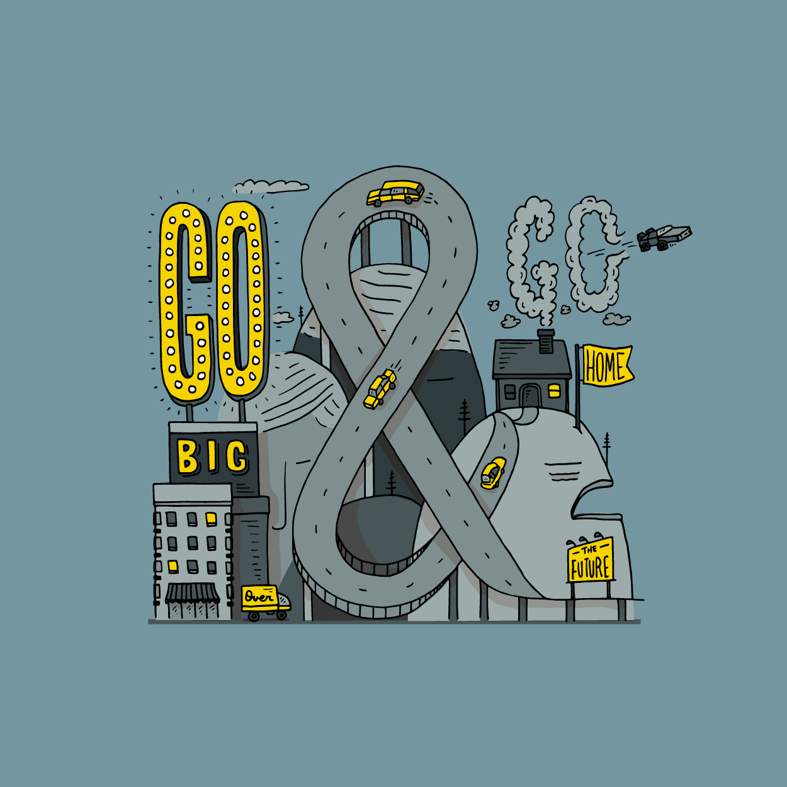
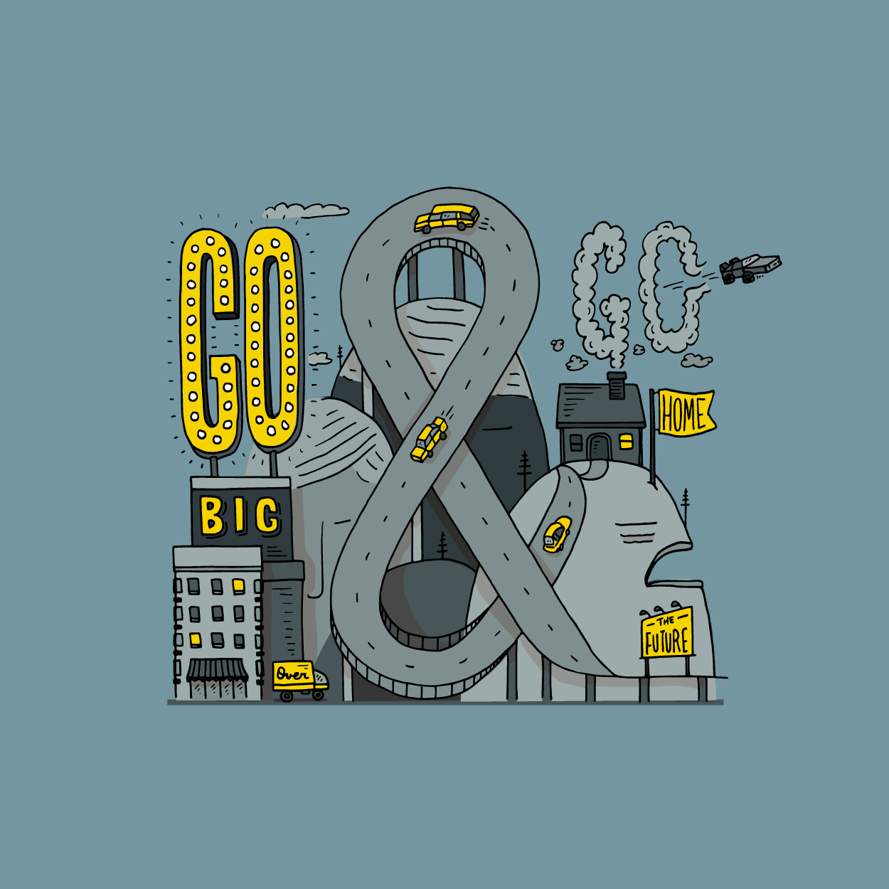
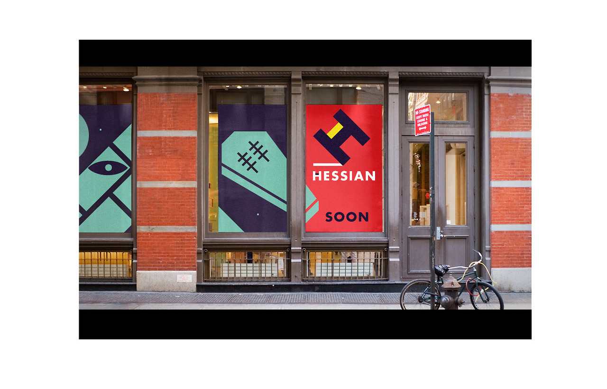
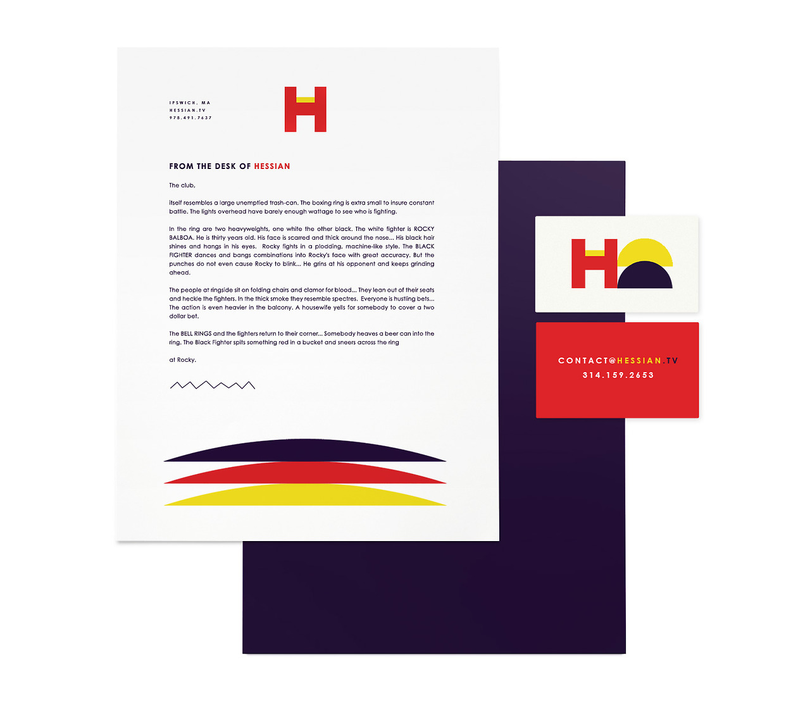

Go Big & Go Home
A fantastic illustration by the talented Kyle Steed. In addition to Steedtastic, his Hand-Drawn Words blog is worth a look.

Go Big & Go Home
A fantastic illustration by the talented Kyle Steed. In addition to Steedtastic, his Hand-Drawn Words blog is worth a look.
Typeplate is a “typographic starter kit”. We don’t make aesthetic design choices, but define proper markup with extensible styling for common typographic patterns. A stripped-down Sass library concerned with the appropriate technical implementation of design patterns—not how they look.
For the last several days we have been refining our base Style Hatch framework for all of our theme builds. In the process we have switched over to SCSS from LESS for our CSS pre-processor, Grunt.js for build and testing, and Bower for package management. Typeplate fits perfectly into our new workflow.
If you want to build a ship, don’t drum up the men to gather wood, divide the work and give orders. Instead, teach them to yearn for the vast and endless sea.
Antoine de Saint-Exupery, via "Weather the Storms of Life"
Last Friday we pushed our latest grid-based theme live on Tumblr. Patchwork lets you add #featured and #minimal tags to your posts (or add your own custom tags in the Customize menu). The #featured tag will display your post in the grid across two columns, and the #minimal tag will only show your Photo, Video or Audio content with the full captions on the permalink pages.
We also spent quite a lot of time refining the theme’s responsive layout features for a flawless experience on mobile devices. Resize your browser window down on the demo site to get an idea of how it looks.
Check out our alternate demo site at patchwork-minimal.stylehatch.co to get an idea of how you can customize virtually ever visual element in the theme.
If you have a quick question about the theme tweet us @stylehatch or send an email to patchwork@stylehatch.co.
For all you typography fans, MyFonts, home of the world’s largest collection of fonts, is now on Tumblr using our popular Juuvy theme.
In matters of style, swim with the current; in matters of principle, stand like a rock.
Thomas Jefferson


"Products are made in the factory, but brands are created in the mind."
— Walter Landor
As an experiment Ben Pieratt, founder of Svpply went through the exercise of creating Hessian as visual brand without a product. For $18,000 the name, identity, Tumblr blog, and assets can be yours for your new restaurant, mobile app, teeshirt line, organic blueberry syrups or game development studio.
The idea, product and real branding work is all up to you, after all a brand is an experience living at the intersection of an expectation and a promise.